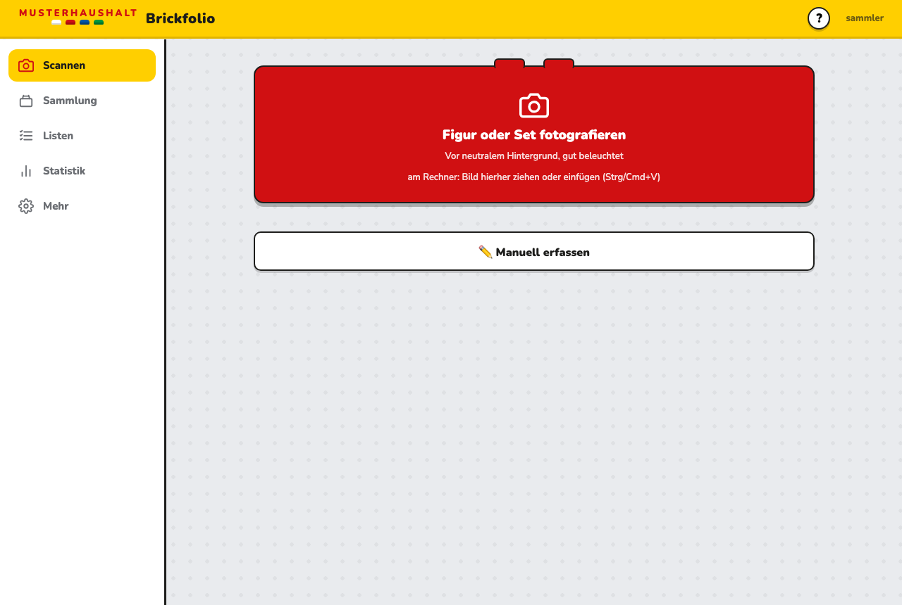
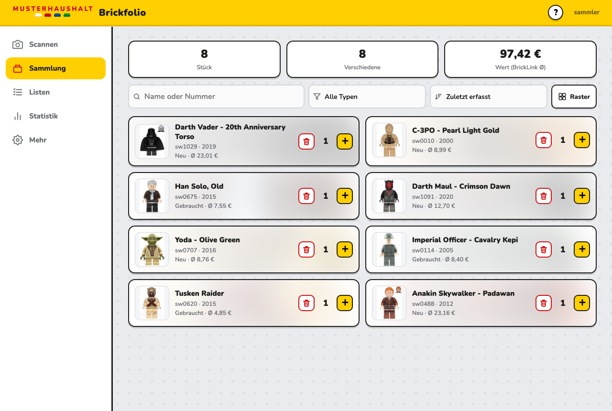
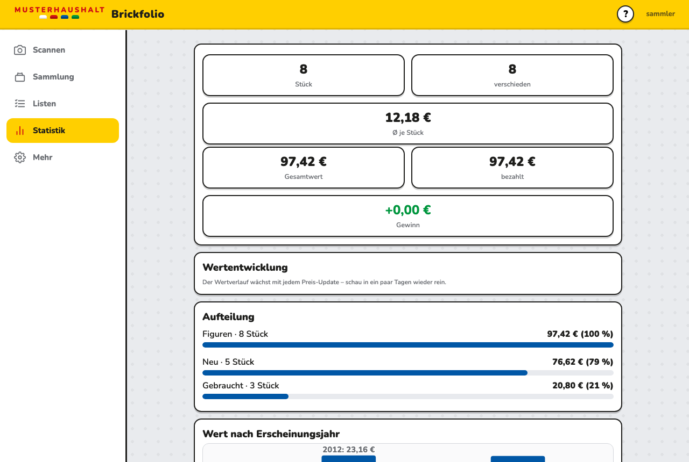
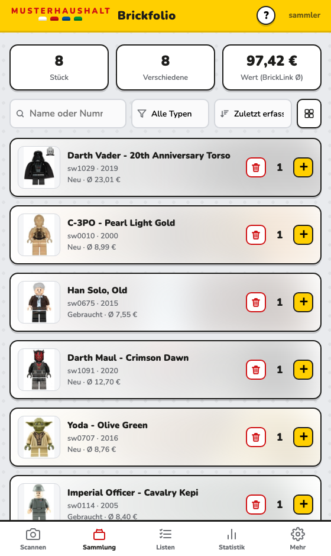
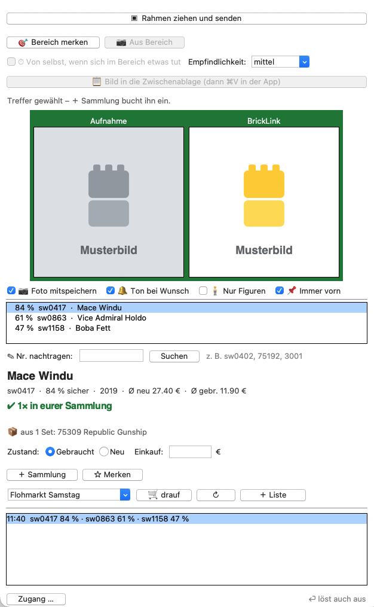

Foto → Treffer → drin.
Minifigur oder Set mit dem Handy fotografieren, den richtigen Treffer antippen – fertig. Kein
Konto, keine Wolke, kein Abo: Brickfolio läuft auf deinem Rechner, und
die Sammlung bleibt dort.



Die Kamera erkennt Minifiguren und Sets. Wer lieber sucht: nach Nummer, Name oder Aussehen – „roter Protokolldroide“ findet R-3PO.
Ø-Preise von BrickLink, neu und gebraucht, mit eigenem Verlauf je Figur. Über deinen eigenen kostenlosen Zugang.
Einkaufslisten mit anteiliger Aufteilung des Gesamtpreises, Wunschliste, Doppelte-Liste – und offline nutzbar.
Mehrere Benutzer auf einer gemeinsamen Sammlung. Jeder sieht, was schon da ist – Doppelkäufe fallen weg.
Mehrere Installationen verbinden sich über einen kleinen Vermittler. Nachrichten sind Ende-zu-Ende verschlüsselt.
Kein Brickfolio-Dienst dazwischen, keine Anmeldung bei uns. Was gespeichert wird, liegt auf deinem Server.
Die meisten betreiben Brickfolio auf ihrer NAS: Sie läuft ohnehin durch, steht im eigenen Netz, und die Sammlung liegt dort, wo auch die Fotos liegen. Für Synology gibt es eine Anleitung Schritt für Schritt – ohne Kommandozeile.
In der File Station unter docker
einen Ordner brickfolio anlegen, darin
data.
Ergebnis: /volume1/docker/brickfolio/data
– der einzige Ordner, auf den es ankommt. Dort liegt die Datenbank,
alles andere ist ersetzbar.
Container Manager → Projekt → Erstellen, Name
brickfolio, Pfad /docker/brickfolio, Quelle
YAML-Code erstellen. Hinein kommt:
services:
brickfolio:
image: ghcr.io/melle79/brickfolio:latest
container_name: brickfolio
restart: unless-stopped
ports: ["8300:8300"]
volumes: ["/volume1/docker/brickfolio/data:/data"]
http://<NAS>:8300 im Browser öffnen. Der
Einrichtungsassistent führt durch Admin-Konto, Anzeigename und die
Zugänge – jeder Schritt lässt sich überspringen.
Im Container Manager das Projekt Erstellen lassen – es
zieht das neue Image und startet neu. Die Daten in
data bleiben unberührt.
Im Container Manager ist unter Registrierung nur Docker Hub
eingetragen. Das stört nicht: Ein Projekt mit vollem Namen
(ghcr.io/…) zieht direkt – die Suche braucht man dafür
gar nicht.
Steht im Protokoll etwas von fehlenden Schreibrechten, gehört
data dem falschen Besitzer. In der File Station unter
Eigenschaften → Berechtigung für brickfolio
samt Unterordnern Schreibrechte setzen.
Geräte wie DS220j oder DS223 laufen – das Image gibt es für
arm64. Nur sehr alte 32-Bit-Modelle
(armv7) fallen raus.
Andere NAS? Für Unraid liegt eine fertige Vorlage bereit. QNAP und alles andere mit Container Station oder Portainer nehmen dieselbe Compose-Datei wie oben – nur der Pfad vor dem Doppelpunkt heißt dort anders. Vollständige Synology-Anleitung · Unraid-Vorlage
Brickfolio ist ein Docker-Image für x86-64 (jeder gewöhnliche Intel- oder AMD-Rechner) und arm64 (Raspberry Pi, ARM-NAS, Apple Silicon). Docker sucht die passende Fassung selbst aus – der Befehl ist überall derselbe.
Der kürzeste Weg. PC, Server, NAS, Raspberry Pi.
# docker-compose.yml
services:
brickfolio:
image: melle79/brickfolio:latest
restart: unless-stopped
ports: ["8300:8300"]
volumes: ["./data:/data"]
docker compose up -d, dann
http://<rechner>:8300 aufrufen.
Ohne eigenen Rechner, mit einem Klick.
Beide Anbieter lesen die Vorlage aus dem Projekt und richten alles ein. Wichtig: ein dauerhaftes Verzeichnis buchen – ohne eigene Platte wäre die Sammlung nach jedem Neustart weg.
Zum Mitentwickeln oder für eigene Änderungen.
git clone https://github.com/Melle79/brickfolio cd brickfolio docker compose up -d --build
FastAPI und SQLite im Rücken, Vanilla-JS im Browser – kein Bauschritt fürs Frontend.
Beim ersten Start führt ein Assistent durch alles Weitere: Admin-Konto, Anzeigename und die Zugänge für Preise und Katalogsuche. Jeder Schritt lässt sich überspringen und später nachholen. Die Zugänge bei BrickLink und Rebrickable sind kostenlos und bleiben deine.
Brickfolio läuft im Browser – aber es muss nicht darin bleiben. Chrome, Edge und Safari können die Seite als Programm installieren: eigenes Fenster, eigenes Symbol im Dock oder in der Taskleiste, kein Adressfeld, keine Lesezeichen. Es startet wie jede andere Anwendung.
In der Adressleiste erscheint rechts ein Symbol zum Installieren (Chrome und Edge). Bei Safari: Ablage → Zum Dock hinzufügen. Danach liegt Brickfolio bei den Programmen.
Am Rechner steht die Navigation links und die Sammlung zweispaltig daneben. Auf dem Handy rutscht sie nach unten, alles wird einspaltig – dieselbe App, zwei Zuschnitte.
Einmal geladen, bleibt die Oberfläche verfügbar. Zum Nachschlagen der Sammlung genügt der eigene Server – wer unterwegs ist, kommt per VPN oder Tunnel heran.

Dasselbe gilt fürs Handy: „Zum Startbildschirm hinzufügen" macht daraus eine App mit eigenem Symbol. Praktisch, wenn man auf dem Flohmarkt schnell nachsehen will, ob eine Figur schon da ist – dafür muss die App allerdings von unterwegs erreichbar sein, siehe unten.
Brickfolio läuft zunächst nur im eigenen Netz. Wer auf dem Flohmarkt nachsehen will, ob eine Figur schon da ist, braucht einen Weg von außen – und der heißt nicht Portfreigabe am Router. Die stellt den Server dem ganzen Internet hin.
Der Tunnel baut die Verbindung von innen nach außen auf – am Router bleibt alles zu. In der App steckt unter Mehr → Externer Zugriff ein Assistent, der aus deinem Tunnel-Token den fertigen Compose-Block baut. Der Token bleibt dabei im Browser; die App speichert ihn nicht und schickt ihn nirgendwohin. Kostenlos.
Wer ohnehin WireGuard oder Tailscale nutzt oder die VPN-Funktion seines Routers, braucht gar nichts weiter: Im VPN ist die NAS erreichbar wie zu Hause.
Völlig in Ordnung. Erfassen lässt sich auch ohne Netz von außen – wer unterwegs nur nachschlagen will, nimmt die Sammlung als CSV oder Druckliste mit.
Ein eigenes kleines Programm für Mac und Windows – gedacht für Auktions-Streams. Der Verkäufer hält eine Figur in die Kamera, du ziehst am Bildschirm einen Rahmen darum, und der Treffer steht mit Nummer, Ø-Preisen und „habt ihr schon“ da. Ohne Bildschirmfoto, ohne Datei, ohne Ziehen und Ablegen.
Er läuft nicht für sich allein. Der Live-Scanner ist die Fernbedienung zu einer laufenden Brickfolio-Instanz: Dort meldet er sich beim ersten Start mit Adresse, Benutzername und Passwort an, von dort kommen Sammlung, Listen und Preise, und dorthin bucht er. Ohne eigene Instanz hat er nichts, woran er sich wenden könnte.

Im Stream zählt jede Sekunde. Ein Tastendruck genügt; auf Wunsch löst er selbst aus, sobald im gemerkten Bereich eine neue Figur erscheint.
Die Erkennung liefert eine Liste mit Quoten – bei Varianten derselben Figur liegt die richtige oft auf Platz zwei. Ein Klick wechselt die Zeile, Preise und Bild gehen mit.
Vom Treffer direkt in Sammlung, Wunschliste oder auf eine Einkaufsliste – über dieselbe Schnittstelle, die auch der Browser benutzt. Gebucht wird nur, was du anklickst.
Mac und Windows, nichts nachzuinstallieren, und er hält sich selbst aktuell. Eigenes Projekt, eigene Veröffentlichungen.
Es gibt keine Brickfolio-Wolke und kein Konto bei uns. Wer die App nutzen will, betreibt sie selbst.
Brickfolio verkauft nichts und vermittelt keine Käufe. Preise sind Anhaltspunkte von BrickLink, keine Bewertung.
Ein privates Hobbyprojekt, das weder gesponsert noch autorisiert noch unterstützt wird.